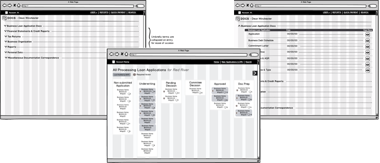

Project Background
Business Alliance Financial Services, LLC (BAFS) is one of only a few institutions that validate business loans for lending agencies (ex: banks and credit unions).
If you have ever owned a home, the mortgage process and paperwork involved could give you an idea of the complexities of a business loan. Much of this process involves a combination of paper, email, fax, and phone calls, which produce literal rooms of filed paper at BAFS.
Our Goal:
Transition BAFS from their paper-based process to using an easier, more efficient, and accurate web portal. Enable BAFS to automate parts of their process and expedite communication to facilitate market expansion.
Definition & Design
One of the challenges in this project was the complex hierarchical, dependant requirements for the applicant. One of the many examples includes: different paperwork is required for different types of creditor backing. These requirements were usually not obvious, resulting in most applications being only partially submitted and needing to go through multiple approval checks before BAFS could even start the loan validation process - which, in turn, had its complexities.
Through on-site user research, I assessed the challenges facing BAFS and gained insight into their processes and pain-points. After gaining a detailed understanding of their paper applications, I applied information architecture techniques to map out the processes' various dependencies in a digestible format.

Using Balsamic, I wireframed a loan application portal from three key personas I had identified in my research: the business loan applicant, the lender, and BAFS (who approves or denies the loan.) Following the mockups, I created the user interface design and branding for the application and ushered that work through front-end development. The final solution involved a solution similar to Trello's dashboard that accounted for process and communication components for internal users and a fully automated customer-facing loan process. By creating this portal, BAFS was able to decrease costs per loan and increase loan volume.